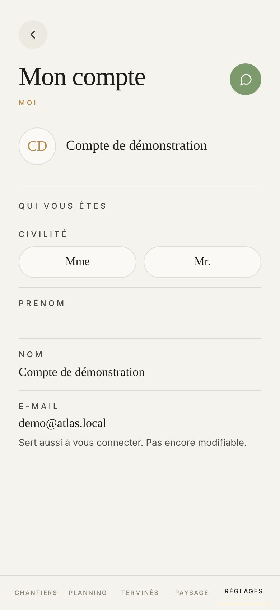

Proposé
Aujourd'hui

Ce qui change
- Plus de « MOI » doré sous le titre : le titre suffit, comme sur le sommaire.
- Le rond et le nom ouvrent la page dans une plage. Le rond porte un petit appareil doré : aujourd'hui rien ne dit qu'on le touche pour mettre sa photo.
- Civilité, Prénom, Nom et E-mail vont dans une plage, sous « Qui vous êtes » en doré. Les libellés s'écrivent en toutes lettres, plus en petites capitales espacées.
- Mme et Mr. deviennent deux grandes pastilles de 48 px ; la prise est pleine, en vert.
- Une case vide dit ce qu'elle attend : « Votre prénom », « Votre nom de famille ». Aujourd'hui, une case vide ressemble à un trou.
- L'e-mail porte un cadenas doré : on voit qu'il ne s'ouvre pas avant de lire pourquoi.
- La feuille de la photo gagne « Annuler » en simple mot, comme celle de Se déconnecter.
Ce qui ne bouge pas
- Pas de téléphone ici : celui que vos clients voient est celui de Mon entreprise (votre réponse A du 14 août).
- La civilité se retire en réappuyant dessus : touchez Mr. deux fois.
- Le nom du haut et les initiales suivent ce que vous tapez dans Prénom et Nom ; sans nom, c'est l'e-mail qui s'affiche (touchez « Un compte neuf »).
- L'e-mail ne se change pas, et sa phrase reste : sans elle, une case qui ne s'ouvre pas se lirait comme une panne.
- Enregistrer n'apparaît que si quelque chose a changé, au-dessus de la barre. Quitter une case enregistre aussi, et « Enregistré » s'attarde le temps de se lire. Essayez en changeant le prénom.
- La feuille de la photo : Prendre une photo, Choisir dans la galerie, et Retirer la photo quand il y en a une.
- Un refus du serveur s'écrit en haut : « Impossible d'enregistrer pour l'instant. Réessayez. »